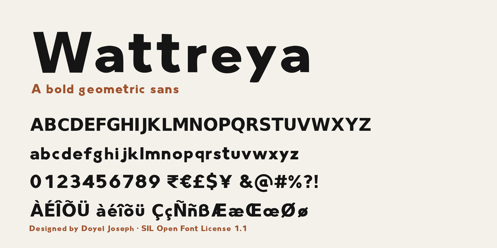

Wattreya is a bold geometric sans serif designed by Doyel Joseph for Bilara Group. Its letters were first drawn by hand and then digitised, so the clean geometric forms keep a slightly warmer, human edge.
The font is made for headlines, logos, signage and other short display text. It covers basic Latin and Western European languages, with figures, punctuation and common currency symbols including the Indian rupee sign (₹).
To contribute, see github.com/bilaragroup/wattreya-font.
